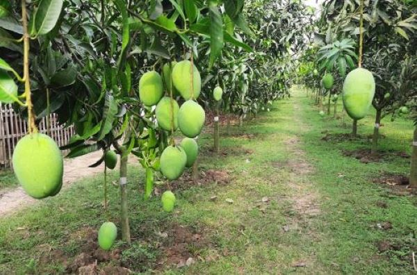
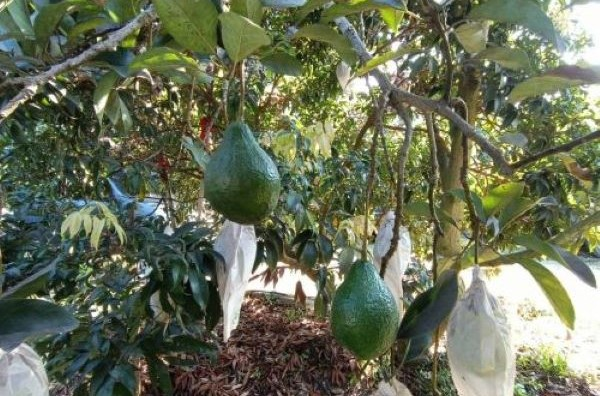

關 於
歡迎來到 ，即 "Huang's Family Fruit Store"。
我們位於嘉義水上鄉種植水果，不同於一般商業水果店，我們的故事始於家族的耕作和熱愛。
在HF2S，我們以家族的名義栽種和銷售水果，每一顆水果都經過我們精心的栽培和悉心的呵護。
我們以自產自銷為榮，這不僅是對農產品品質的嚴格把關，更是對您健康的負責承諾。
我們的農作物絕不使用農藥，確保您享用到的每一口水果都是純淨無添加的。
HF2S不僅僅是一個水果店，更是一個家庭的故事和情感的結晶。
我們的使命是將新鮮和健康的水果帶給每一個家庭，讓您在每一個季節都能品嚐到大自然的美味和豐盈。
走進HF2S，我們不僅提供水果，更帶給您對大自然的敬畏和對家族傳統的尊重。
無論您是想要一籃新鮮的水果來增添家庭的生活色彩，還是想要一份特別的禮物來表達心意，HF2S都會是您最佳的選擇。
我們期待與您分享我們的故事，一起享受大自然所賜予的美好和豐盈。
歡迎您隨時蒞臨HF2S，感受我們用心栽種的每一份果實，帶來健康和幸福。

